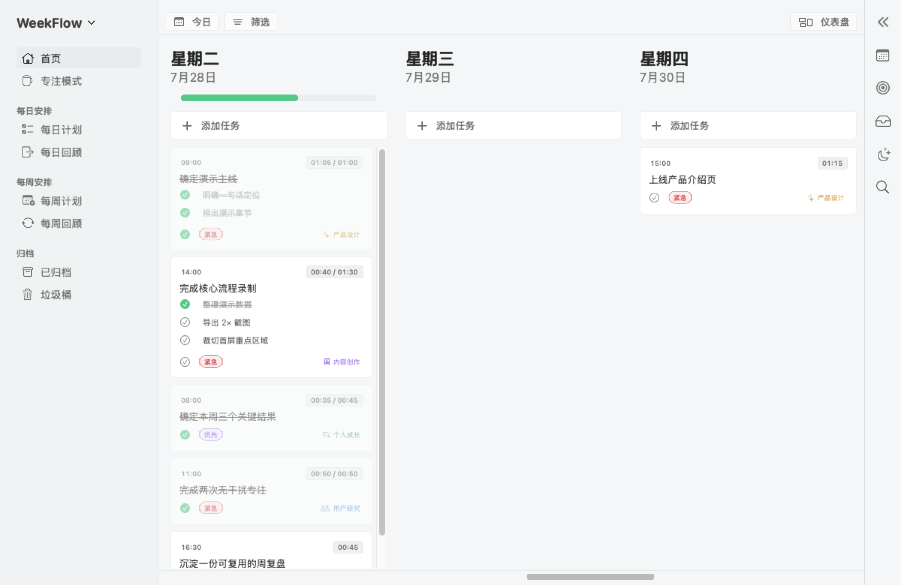

首页预览图暂不可用
Weekflow · 原生 macOS 应用
不再从一长串待办开始。先决定这一周真正要推进什么，再把它变成今天可以完成的安排。
本地优先 · 无需账户 · macOS 14+
看清今天，把注意力留给眼前的一步。
一条清楚的执行路径
Weekflow 用一周作为行动单位，让计划、执行与回顾彼此相连。你总能知道现在该做什么，也知道它为什么重要。
从少数真正重要的结果开始，给这一周一个明确方向。
把目标分解为可完成的任务，并集中放进本周任务池。
手动拖放或自动分配，让计划贴合每天真实可用的时间。
记录实际投入，在一天与一周结束时收拢成果和经验。
一周不需要塞得更满。
为执行而设计
从周视角建立方向，再进入每天的节奏。每个界面只保留当下需要的信息，不把你困在管理工具里。
计划一周
先建立周目标，再拆解、分配与调整。计划改变时，仍然能看见任务属于哪个目标。
每周计划预览图暂不可用
完成今天
把任务排进工作时段，再进入专注模式记录真实投入。今日完成，周目标也随之推进。
专注模式预览图暂不可用
灵活调整 拖放任务，计划变化时重新安排。
真实投入 用专注记录补全计划之外的事实。
闭环回顾 从每天到每周，持续校准自己的节奏。
从下一周开始
原生 macOS · macOS 14 或更高版本